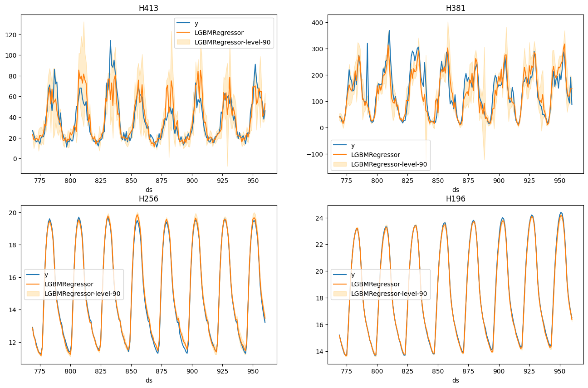

import random
import lightgbm as lgb
import matplotlib.pyplot as plt
import numpy as np
import xgboost as xgb
from datasetsforecast.m4 import M4, M4Info
from sklearn.metrics import mean_squared_error
from window_ops.ewm import ewm_mean
from window_ops.expanding import expanding_mean
from window_ops.rolling import rolling_mean
from mlforecast.lgb_cv import LightGBMCV
from mlforecast.target_transforms import Differences
from mlforecast.utils import generate_daily_series, generate_prices_for_seriesMLForecast
Full pipeline encapsulation
MLForecast
MLForecast (models:Union[sklearn.base.BaseEstimator,List[sklearn.base.Bas eEstimator],Dict[str,sklearn.base.BaseEstimator]], freq:Union [int,str,pandas._libs.tslibs.offsets.BaseOffset,NoneType]=Non e, lags:Optional[Iterable[int]]=None, lag_transforms:Optional [Dict[int,List[Union[Callable,Tuple[Callable,Any]]]]]=None, date_features:Optional[Iterable[Union[str,Callable]]]=None, differences:Optional[Iterable[int]]=None, num_threads:int=1, target_transforms:Optional[List[mlforecast.target_transforms. BaseTargetTransform]]=None)
Create forecast object
| Type | Default | Details | |
|---|---|---|---|
| models | typing.Union[sklearn.base.BaseEstimator, typing.List[sklearn.base.BaseEstimator], typing.Dict[str, sklearn.base.BaseEstimator]] | Models that will be trained and used to compute the forecasts. | |
| freq | typing.Union[int, str, pandas._libs.tslibs.offsets.BaseOffset, NoneType] | None | Pandas offset, pandas offset alias, e.g. ‘D’, ‘W-THU’ or integer denoting the frequency of the series. |
| lags | typing.Optional[typing.Iterable[int]] | None | Lags of the target to use as features. |
| lag_transforms | typing.Optional[typing.Dict[int, typing.List[typing.Union[typing.Callable, typing.Tuple[typing.Callable, typing.Any]]]]] | None | Mapping of target lags to their transformations. |
| date_features | typing.Optional[typing.Iterable[typing.Union[str, typing.Callable]]] | None | Features computed from the dates. Can be pandas date attributes or functions that will take the dates as input. |
| differences | typing.Optional[typing.Iterable[int]] | None | Differences to take of the target before computing the features. These are restored at the forecasting step. |
| num_threads | int | 1 | Number of threads to use when computing the features. |
| target_transforms | typing.Optional[typing.List[mlforecast.target_transforms.BaseTargetTransform]] | None | Transformations that will be applied to the target before computing the features and restored after the forecasting step. |
The MLForecast class is a high level abstraction that encapsulates all the steps in the pipeline (preprocessing, fitting the model and computing the predictions). It tries to mimic the scikit-learn API.
Example
This shows an example with just 4 series of the M4 dataset. If you want to run it yourself on all of them, you can refer to this notebook.
group = 'Hourly'
await M4.async_download('data', group=group)
df, *_ = M4.load(directory='data', group=group)
df['ds'] = df['ds'].astype('int')
ids = df['unique_id'].unique()
random.seed(0)
sample_ids = random.choices(ids, k=4)
sample_df = df[df['unique_id'].isin(sample_ids)]
sample_df| unique_id | ds | y | |
|---|---|---|---|
| 86796 | H196 | 1 | 11.8 |
| 86797 | H196 | 2 | 11.4 |
| 86798 | H196 | 3 | 11.1 |
| 86799 | H196 | 4 | 10.8 |
| 86800 | H196 | 5 | 10.6 |
| ... | ... | ... | ... |
| 325235 | H413 | 1004 | 99.0 |
| 325236 | H413 | 1005 | 88.0 |
| 325237 | H413 | 1006 | 47.0 |
| 325238 | H413 | 1007 | 41.0 |
| 325239 | H413 | 1008 | 34.0 |
4032 rows × 3 columns
We now split this data into train and validation.
info = M4Info[group]
horizon = info.horizon
valid = sample_df.groupby('unique_id').tail(horizon)
train = sample_df.drop(valid.index)
train.shape, valid.shape((3840, 3), (192, 3))Creating the Forecast object
The forecast object encapsulates the feature engineering + training the models + forecasting. When we initialize it we define:
- The models we want to train
- The series frequency. This is added to the last dates seen in train for the forecast step, if the time column contains integer values we can leave it empty or set it to 1.
- The feature engineering:
- Lags to use as features
- Transformations on the lags
- Date features
- Differences to apply to the target before computing the features, which are then restored when forecasting.
- Number of threads to use when computing the features.
fcst = MLForecast(
models=lgb.LGBMRegressor(random_state=0),
lags=[24 * (i+1) for i in range(7)],
lag_transforms={
48: [(ewm_mean, 0.3)],
},
num_threads=1,
target_transforms=[Differences([24])],
)
fcstMLForecast(models=[LGBMRegressor], freq=1, lag_features=['lag24', 'lag48', 'lag72', 'lag96', 'lag120', 'lag144', 'lag168', 'ewm_mean_lag48_alpha0.3'], date_features=[], num_threads=1)Once we have this setup we can compute the features and fit the model.
MLForecast.fit
MLForecast.fit (df:pandas.core.frame.DataFrame, id_col:str='unique_id', time_col:str='ds', target_col:str='y', static_features:Optional[List[str]]=None, dropna:bool=True, keep_last_n:Optional[int]=None, max_horizon:Optional[int]=None, prediction_intervals:Opti onal[mlforecast.utils.PredictionIntervals]=None, data:Optional[pandas.core.frame.DataFrame]=None)
Apply the feature engineering and train the models.
| Type | Default | Details | |
|---|---|---|---|
| df | DataFrame | Series data in long format. | |
| id_col | str | unique_id | Column that identifies each serie. |
| time_col | str | ds | Column that identifies each timestep, its values can be timestamps or integers. |
| target_col | str | y | Column that contains the target. |
| static_features | typing.Optional[typing.List[str]] | None | Names of the features that are static and will be repeated when forecasting. |
| dropna | bool | True | Drop rows with missing values produced by the transformations. |
| keep_last_n | typing.Optional[int] | None | Keep only these many records from each serie for the forecasting step. Can save time and memory if your features allow it. |
| max_horizon | typing.Optional[int] | None | |
| prediction_intervals | typing.Optional[mlforecast.utils.PredictionIntervals] | None | Configuration to calibrate prediction intervals (Conformal Prediction). |
| data | typing.Optional[pandas.core.frame.DataFrame] | None | Series data in long format. This argument has been replaced by df and will be removed in a later release. |
| Returns | MLForecast | noqa: ARG002 |
fcst.fit(train);Once we’ve run this we’re ready to compute our predictions.
MLForecast.predict
MLForecast.predict (h:int, dynamic_dfs:Optional[List[pandas.core.frame.DataFrame ]]=None, before_predict_callback:Optional[Callable]=None, after_predict_callback:Optional[Callable]=None, new_df:Optional[pandas.core.frame.DataFrame]=None, level:Optional[List[Union[int,float]]]=None, horizon:Optional[int]=None, new_data:Optional[pandas.core.frame.DataFrame]=None)
Compute the predictions for the next horizon steps.
| Type | Default | Details | |
|---|---|---|---|
| h | int | Number of periods to predict. | |
| dynamic_dfs | typing.Optional[typing.List[pandas.core.frame.DataFrame]] | None | Future values of the dynamic features, e.g. prices. |
| before_predict_callback | typing.Optional[typing.Callable] | None | Function to call on the features before computing the predictions. This function will take the input dataframe that will be passed to the model for predicting and should return a dataframe with the same structure. The series identifier is on the index. |
| after_predict_callback | typing.Optional[typing.Callable] | None | Function to call on the predictions before updating the targets. This function will take a pandas Series with the predictions and should return another one with the same structure. The series identifier is on the index. |
| new_df | typing.Optional[pandas.core.frame.DataFrame] | None | Series data of new observations for which forecasts are to be generated. This dataframe should have the same structure as the one used to fit the model, including any features and time series data. If new_df is not None, the method will generate forecasts for the new observations. |
| level | typing.Optional[typing.List[typing.Union[int, float]]] | None | Confidence levels between 0 and 100 for prediction intervals. |
| horizon | typing.Optional[int] | None | Number of periods to predict. This argument has been replaced by h and will be removed in a later release. |
| new_data | typing.Optional[pandas.core.frame.DataFrame] | None | Series data of new observations for which forecasts are to be generated. This dataframe should have the same structure as the one used to fit the model, including any features and time series data. If new_data is not None, the method will generate forecasts for the new observations. |
| Returns | DataFrame | noqa: ARG002 noqa: ARG002 |
predictions = fcst.predict(horizon)We can see at a couple of results.
results = valid.merge(predictions, on=['unique_id', 'ds']).set_index('unique_id')
fig, ax = plt.subplots(nrows=2, ncols=2, figsize=(16, 10))
for uid, axi in zip(sample_ids, ax.flat):
results.loc[uid].set_index('ds').plot(ax=axi, title=uid)
fig.savefig('figs/forecast__predict.png', bbox_inches='tight')
plt.close()
Prediction intervals
With MLForecast, you can generate prediction intervals using Conformal Prediction. To configure Conformal Prediction, you need to pass an instance of the PredictionIntervals class to the prediction_intervals argument of the fit method. The class takes three parameters: n_windows, h and method.
n_windowsrepresents the number of cross-validation windows used to calibrate the intervalshis the forecast horizonmethodcan beconformal_distributionorconformal_error;conformal_distribution(default) creates forecasts paths based on the cross-validation errors and calculate quantiles using those paths, on the other handconformal_errorcalculates the error quantiles to produce prediction intervals. The strategy will adjust the intervals for each horizon step, resulting in different widths for each step. Please note that a minimum of 2 cross-validation windows must be used.
fcst.fit(
train,
prediction_intervals=PredictionIntervals(n_windows=3, h=48)
);After that, you just have to include your desired confidence levels to the predict method using the level argument. Levels must lie between 0 and 100.
predictions_w_intervals = fcst.predict(48, level=[50, 80, 95])predictions_w_intervals.head()| unique_id | ds | LGBMRegressor | LGBMRegressor-lo-95 | LGBMRegressor-lo-80 | LGBMRegressor-lo-50 | LGBMRegressor-hi-50 | LGBMRegressor-hi-80 | LGBMRegressor-hi-95 | |
|---|---|---|---|---|---|---|---|---|---|
| 0 | H196 | 961 | 16.071271 | 15.958042 | 15.971271 | 16.005091 | 16.137452 | 16.171271 | 16.184501 |
| 1 | H196 | 962 | 15.671271 | 15.553632 | 15.553632 | 15.578632 | 15.763911 | 15.788911 | 15.788911 |
| 2 | H196 | 963 | 15.271271 | 15.153632 | 15.153632 | 15.162452 | 15.380091 | 15.388911 | 15.388911 |
| 3 | H196 | 964 | 14.971271 | 14.858042 | 14.871271 | 14.905091 | 15.037452 | 15.071271 | 15.084501 |
| 4 | H196 | 965 | 14.671271 | 14.553632 | 14.553632 | 14.562452 | 14.780091 | 14.788911 | 14.788911 |
# test we can forecast horizon lower than h
# with prediction intervals
for method in ['conformal_distribution', 'conformal_errors']:
fcst.fit(
train,
prediction_intervals=PredictionIntervals(n_windows=3, h=48)
)
preds_h_lower_h = fcst.predict(1, level=[50, 80, 95])
preds_h_lower_h = fcst.predict(30, level=[50, 80, 95])
# test monotonicity of intervals
test_eq(
preds_h_lower_h.filter(regex='lo|hi').apply(
lambda x: x.is_monotonic_increasing,
axis=1
).sum(),
len(preds_h_lower_h)
)Let’s explore the generated intervals.
results = valid.merge(predictions_w_intervals, on=['unique_id', 'ds']).set_index('unique_id')
fig, ax = plt.subplots(nrows=2, ncols=2, figsize=(16, 10))
for uid, axi in zip(sample_ids, ax.flat):
uid_results = results.loc[uid].set_index('ds')
uid_results[['y', 'LGBMRegressor']].plot(ax=axi, title=uid)
for lv in [50, 80, 95]:
axi.fill_between(
uid_results.index,
uid_results[f'LGBMRegressor-lo-{lv}'].values,
uid_results[f'LGBMRegressor-hi-{lv}'].values,
label=f'LGBMRegressor-level-{lv}',
color='orange',
alpha=1 - lv / 100
)
axi.legend()
fig.savefig('figs/forecast__predict_intervals.png', bbox_inches='tight')
plt.close()
If you want to reduce the computational time and produce intervals with the same width for the whole forecast horizon, simple pass h=1 to the PredictionIntervals class. The caveat of this strategy is that in some cases, variance of the absolute residuals maybe be small (even zero), so the intervals may be too narrow.
fcst.fit(
train,
prediction_intervals=PredictionIntervals(n_windows=3, h=1)
);predictions_w_intervals_ws_1 = fcst.predict(48, level=[80, 90, 95])Let’s explore the generated intervals.
results = valid.merge(predictions_w_intervals_ws_1, on=['unique_id', 'ds']).set_index('unique_id')
fig, ax = plt.subplots(nrows=2, ncols=2, figsize=(16, 10))
for uid, axi in zip(sample_ids, ax.flat):
uid_results = results.loc[uid].set_index('ds')
uid_results[['y', 'LGBMRegressor']].plot(ax=axi, title=uid)
axi.fill_between(
uid_results.index,
uid_results['LGBMRegressor-lo-90'].values,
uid_results['LGBMRegressor-hi-90'].values,
label='LGBMRegressor-level-90',
color='orange',
alpha=0.2
)
axi.legend()
fig.savefig('figs/forecast__predict_intervals_window_size_1.png', bbox_inches='tight')
plt.close()Forecast using a pretrained model
MLForecast allows you to use a pretrained model to generate forecasts for a new dataset. Simply provide a pandas dataframe containing the new observations as the value for the new_data argument when calling the predict method. The dataframe should have the same structure as the one used to fit the model, including any features and time series data. The function will then use the pretrained model to generate forecasts for the new observations. This allows you to easily apply a pretrained model to a new dataset and generate forecasts without the need to retrain the model.
ercot_df = pd.read_csv('https://datasets-nixtla.s3.amazonaws.com/ERCOT-clean.csv')
# we have to convert the ds column to integers
# since MLForecast was trained with that structure
ercot_df['ds'] = np.arange(1, len(ercot_df) + 1)
# use the `new_data` argument to pass the ercot dataset
ercot_fcsts = fcst.predict(horizon, new_df=ercot_df)
fig, ax = plt.subplots()
ercot_df.tail(48 * 2).plot(x='ds', y='y', figsize=(20, 7), ax=ax)
ercot_fcsts.plot(x='ds', y='LGBMRegressor', ax=ax, title='ERCOT forecasts trained on M4-Hourly dataset');
plt.gcf().savefig('figs/forecast__ercot.png', bbox_inches='tight')
plt.close()
If you want to take a look at the data that will be used to train the models you can call Forecast.preprocess.
MLForecast.preprocess
MLForecast.preprocess (df:pandas.core.frame.DataFrame, id_col:str='unique_id', time_col:str='ds', target_col:str='y', static_features:Optional[List[str]]=None, dropna:bool=True, keep_last_n:Optional[int]=None, max_horizon:Optional[int]=None, return_X_y:bool=False, data:Optional[pandas.core.frame.DataFrame]=None)
Add the features to data.
| Type | Default | Details | |
|---|---|---|---|
| df | DataFrame | Series data in long format. | |
| id_col | str | unique_id | Column that identifies each serie. |
| time_col | str | ds | Column that identifies each timestep, its values can be timestamps or integers. |
| target_col | str | y | Column that contains the target. |
| static_features | typing.Optional[typing.List[str]] | None | Names of the features that are static and will be repeated when forecasting. |
| dropna | bool | True | Drop rows with missing values produced by the transformations. |
| keep_last_n | typing.Optional[int] | None | Keep only these many records from each serie for the forecasting step. Can save time and memory if your features allow it. |
| max_horizon | typing.Optional[int] | None | |
| return_X_y | bool | False | |
| data | typing.Optional[pandas.core.frame.DataFrame] | None | Series data in long format. This argument has been replaced by df and will be removed in a later release. |
| Returns | typing.Union[pandas.core.frame.DataFrame, typing.Tuple[pandas.core.frame.DataFrame, typing.Union[pandas.core.series.Series, pandas.core.frame.DataFrame]]] | noqa: ARG002 |
prep_df = fcst.preprocess(train)
prep_df| unique_id | ds | y | lag24 | lag48 | lag72 | lag96 | lag120 | lag144 | lag168 | ewm_mean_lag48_alpha0.3 | |
|---|---|---|---|---|---|---|---|---|---|---|---|
| 86988 | H196 | 193 | 0.1 | 0.0 | 0.0 | 0.0 | 0.3 | 0.1 | 0.1 | 0.3 | 0.002810 |
| 86989 | H196 | 194 | 0.1 | -0.1 | 0.1 | 0.0 | 0.3 | 0.1 | 0.1 | 0.3 | 0.031967 |
| 86990 | H196 | 195 | 0.1 | -0.1 | 0.1 | 0.0 | 0.3 | 0.1 | 0.2 | 0.1 | 0.052377 |
| 86991 | H196 | 196 | 0.1 | 0.0 | 0.0 | 0.0 | 0.3 | 0.2 | 0.1 | 0.2 | 0.036664 |
| 86992 | H196 | 197 | 0.0 | 0.0 | 0.0 | 0.1 | 0.2 | 0.2 | 0.1 | 0.2 | 0.025665 |
| ... | ... | ... | ... | ... | ... | ... | ... | ... | ... | ... | ... |
| 325187 | H413 | 956 | 0.0 | 10.0 | 1.0 | 6.0 | -53.0 | 44.0 | -21.0 | 21.0 | 7.963225 |
| 325188 | H413 | 957 | 9.0 | 10.0 | 10.0 | -7.0 | -46.0 | 27.0 | -19.0 | 24.0 | 8.574257 |
| 325189 | H413 | 958 | 16.0 | 8.0 | 5.0 | -9.0 | -36.0 | 32.0 | -13.0 | 8.0 | 7.501980 |
| 325190 | H413 | 959 | -3.0 | 17.0 | -7.0 | 2.0 | -31.0 | 22.0 | 5.0 | -2.0 | 3.151386 |
| 325191 | H413 | 960 | 15.0 | 11.0 | -6.0 | -5.0 | -17.0 | 22.0 | -18.0 | 10.0 | 0.405970 |
3072 rows × 11 columns
If we do this we then have to call Forecast.fit_models, since this only stores the series information.
MLForecast.fit_models
MLForecast.fit_models (X:pandas.core.frame.DataFrame, y:Union[pandas.core.series.Series,pandas.core.fram e.DataFrame])
Manually train models. Use this if you called Forecast.preprocess beforehand.
| Type | Details | |
|---|---|---|
| X | DataFrame | Features. |
| y | typing.Union[pandas.core.series.Series, pandas.core.frame.DataFrame] | Target. |
| Returns | MLForecast | Forecast object with trained models. |
X, y = prep_df.drop(columns=['unique_id', 'ds', 'y']), prep_df['y']
fcst.fit_models(X, y)MLForecast(models=[LGBMRegressor], freq=1, lag_features=['lag24', 'lag48', 'lag72', 'lag96', 'lag120', 'lag144', 'lag168', 'ewm_mean_lag48_alpha0.3'], date_features=[], num_threads=1)predictions2 = fcst.predict(horizon)
pd.testing.assert_frame_equal(predictions, predictions2)Multi-output model
By default mlforecast uses the recursive strategy, i.e. a model is trained to predict the next value and if we’re predicting several values we do it one at a time and then use the model’s predictions as the new target, recompute the features and predict the next step.
There’s another approach where if we want to predict 10 steps ahead we train 10 different models, where each model is trained to predict the value at each specific step, i.e. one model predicts the next value, another one predicts the value two steps ahead and so on. This can be very time consuming but can also provide better results. If you want to use this approach you can specify max_horizon in MLForecast.fit, which will train that many models and each model will predict its corresponding horizon when you call MLForecast.predict.
def avg_mape(df):
full = df.merge(valid)
return abs(full['LGBMRegressor'] - full['y']).div(full['y']).groupby(full['unique_id']).mean()fcst = MLForecast(
models=lgb.LGBMRegressor(random_state=0),
lags=[24 * (i+1) for i in range(7)],
lag_transforms={
1: [(rolling_mean, 24)],
24: [(rolling_mean, 24)],
48: [(ewm_mean, 0.3)],
},
num_threads=1,
target_transforms=[Differences([24])],
)max_horizon = 24
# the following will train 24 models, one for each horizon
individual_fcst = fcst.fit(train, max_horizon=max_horizon)
individual_preds = individual_fcst.predict(max_horizon)
avg_mape_individual = avg_mape(individual_preds).rename('individual')
# the following will train a single model and use the recursive strategy
recursive_fcst = fcst.fit(train)
recursive_preds = recursive_fcst.predict(max_horizon)
avg_mape_recursive = avg_mape(recursive_preds).rename('recursive')
# results
print('Average MAPE per method and serie')
avg_mape_individual.to_frame().join(avg_mape_recursive).applymap('{:.1%}'.format)Average MAPE per method and serie| individual | recursive | |
|---|---|---|
| unique_id | ||
| H196 | 0.5% | 0.6% |
| H256 | 0.7% | 0.6% |
| H381 | 48.9% | 20.3% |
| H413 | 26.9% | 35.1% |
Cross validation
If we would like to know how good our forecast will be for a specific model and set of features then we can perform cross validation. What cross validation does is take our data and split it in two parts, where the first part is used for training and the second one for validation. Since the data is time dependant we usually take the last x observations from our data as the validation set.
This process is implemented in MLForecast.cross_validation, which takes our data and performs the process described above for n_windows times where each window has h validation samples in it. For example, if we have 100 samples and we want to perform 2 backtests each of size 14, the splits will be as follows:
- Train: 1 to 72. Validation: 73 to 86.
- Train: 1 to 86. Validation: 87 to 100.
You can control the size between each cross validation window using the step_size argument. For example, if we have 100 samples and we want to perform 2 backtests each of size 14 and move one step ahead in each fold (step_size=1), the splits will be as follows:
- Train: 1 to 85. Validation: 86 to 99.
- Train: 1 to 86. Validation: 87 to 100.
You can also perform cross validation without refitting your models for each window by setting refit=False. This allows you to evaluate the performance of your models using multiple window sizes without having to retrain them each time.
MLForecast.cross_validation
MLForecast.cross_validation (df:pandas.core.frame.DataFrame, n_windows:int, h:int, id_col:str='unique_id', time_col:str='ds', target_col:str='y', step_size:Optional[int]=None, static_features:Optional[List[str]]=None, dropna:bool=True, keep_last_n:Optional[int]=None, refit:bool=True, max_horizon:Optional[int]=None, before_predi ct_callback:Optional[Callable]=None, after_p redict_callback:Optional[Callable]=None, pre diction_intervals:Optional[mlforecast.utils. PredictionIntervals]=None, level:Optional[List[Union[int,float]]]=None, input_size:Optional[int]=None, fitted:bool=False, data:Optional[pandas.core .frame.DataFrame]=None, window_size:Optional[int]=None)
Perform time series cross validation. Creates n_windows splits where each window has h test periods, trains the models, computes the predictions and merges the actuals.
| Type | Default | Details | |
|---|---|---|---|
| df | DataFrame | Series data in long format. | |
| n_windows | int | Number of windows to evaluate. | |
| h | int | Forecast horizon. | |
| id_col | str | unique_id | Column that identifies each serie. |
| time_col | str | ds | Column that identifies each timestep, its values can be timestamps or integers. |
| target_col | str | y | Column that contains the target. |
| step_size | typing.Optional[int] | None | Step size between each cross validation window. If None it will be equal to h. |
| static_features | typing.Optional[typing.List[str]] | None | Names of the features that are static and will be repeated when forecasting. |
| dropna | bool | True | Drop rows with missing values produced by the transformations. |
| keep_last_n | typing.Optional[int] | None | Keep only these many records from each serie for the forecasting step. Can save time and memory if your features allow it. |
| refit | bool | True | Retrain model for each cross validation window. If False, the models are trained at the beginning and then used to predict each window. |
| max_horizon | typing.Optional[int] | None | |
| before_predict_callback | typing.Optional[typing.Callable] | None | Function to call on the features before computing the predictions. This function will take the input dataframe that will be passed to the model for predicting and should return a dataframe with the same structure. The series identifier is on the index. |
| after_predict_callback | typing.Optional[typing.Callable] | None | Function to call on the predictions before updating the targets. This function will take a pandas Series with the predictions and should return another one with the same structure. The series identifier is on the index. |
| prediction_intervals | typing.Optional[mlforecast.utils.PredictionIntervals] | None | Configuration to calibrate prediction intervals (Conformal Prediction). |
| level | typing.Optional[typing.List[typing.Union[int, float]]] | None | Confidence levels between 0 and 100 for prediction intervals. |
| input_size | typing.Optional[int] | None | Maximum training samples per serie in each window. If None, will use an expanding window. |
| fitted | bool | False | Store the in-sample predictions. |
| data | typing.Optional[pandas.core.frame.DataFrame] | None | Series data in long format. This argument has been replaced by df and will be removed in a later release. |
| window_size | typing.Optional[int] | None | Forecast horizon. This argument has been replaced by h and will be removed in a later release. |
| Returns | pandas DataFrame | Predictions for each window with the series id, timestamp, last train date, target value and predictions from each model. |
fcst = MLForecast(
models=lgb.LGBMRegressor(random_state=0),
lags=[24 * (i+1) for i in range(7)],
lag_transforms={
1: [(rolling_mean, 24)],
24: [(rolling_mean, 24)],
48: [(ewm_mean, 0.3)],
},
num_threads=1,
target_transforms=[Differences([24])],
)
cv_results = fcst.cross_validation(
train,
n_windows=4,
h=horizon,
step_size=horizon,
fitted=True,
)
cv_results| unique_id | ds | cutoff | y | LGBMRegressor | |
|---|---|---|---|---|---|
| 0 | H196 | 769 | 768 | 15.2 | 15.167163 |
| 1 | H196 | 770 | 768 | 14.8 | 14.767163 |
| 2 | H196 | 771 | 768 | 14.4 | 14.467163 |
| 3 | H196 | 772 | 768 | 14.1 | 14.167163 |
| 4 | H196 | 773 | 768 | 13.8 | 13.867163 |
| ... | ... | ... | ... | ... | ... |
| 187 | H413 | 956 | 912 | 59.0 | 64.284167 |
| 188 | H413 | 957 | 912 | 58.0 | 64.830429 |
| 189 | H413 | 958 | 912 | 53.0 | 40.726851 |
| 190 | H413 | 959 | 912 | 38.0 | 42.739657 |
| 191 | H413 | 960 | 912 | 46.0 | 52.802769 |
768 rows × 5 columns
Since we set fitted=True we can access the predictions for the training sets as well with the cross_validation_fitted_values method.
fcst.cross_validation_fitted_values()| unique_id | ds | fold | y | LGBMRegressor | |
|---|---|---|---|---|---|
| 0 | H196 | 1 | 0 | 11.8 | 15.167163 |
| 1 | H196 | 2 | 0 | 11.4 | 14.767163 |
| 2 | H196 | 3 | 0 | 11.1 | 14.467163 |
| 3 | H196 | 4 | 0 | 10.8 | 14.167163 |
| 4 | H196 | 5 | 0 | 10.6 | 13.867163 |
| ... | ... | ... | ... | ... | ... |
| 13435 | H413 | 908 | 3 | 49.0 | 40.262691 |
| 13436 | H413 | 909 | 3 | 39.0 | 26.603123 |
| 13437 | H413 | 910 | 3 | 29.0 | 42.545732 |
| 13438 | H413 | 911 | 3 | 24.0 | 30.053714 |
| 13439 | H413 | 912 | 3 | 20.0 | -13.589900 |
13440 rows × 5 columns
We can also compute prediction intervals by passing a configuration to prediction_intervals as well as values for the width through levels.
cv_results_intervals = fcst.cross_validation(
train,
n_windows=4,
h=horizon,
step_size=horizon,
prediction_intervals=PredictionIntervals(h=horizon),
level=[80, 90]
)
cv_results_intervals| unique_id | ds | cutoff | y | LGBMRegressor | LGBMRegressor-lo-90 | LGBMRegressor-lo-80 | LGBMRegressor-hi-80 | LGBMRegressor-hi-90 | |
|---|---|---|---|---|---|---|---|---|---|
| 0 | H196 | 769 | 768 | 15.2 | 15.167163 | 15.141751 | 15.141751 | 15.192575 | 15.192575 |
| 1 | H196 | 770 | 768 | 14.8 | 14.767163 | 14.741751 | 14.741751 | 14.792575 | 14.792575 |
| 2 | H196 | 771 | 768 | 14.4 | 14.467163 | 14.399951 | 14.407328 | 14.526998 | 14.534374 |
| 3 | H196 | 772 | 768 | 14.1 | 14.167163 | 14.092575 | 14.092575 | 14.241751 | 14.241751 |
| 4 | H196 | 773 | 768 | 13.8 | 13.867163 | 13.792575 | 13.792575 | 13.941751 | 13.941751 |
| ... | ... | ... | ... | ... | ... | ... | ... | ... | ... |
| 187 | H413 | 956 | 912 | 59.0 | 64.284167 | 29.890099 | 34.371545 | 94.196788 | 98.678234 |
| 188 | H413 | 957 | 912 | 58.0 | 64.830429 | 56.874572 | 57.827689 | 71.833169 | 72.786285 |
| 189 | H413 | 958 | 912 | 53.0 | 40.726851 | 35.296195 | 35.846206 | 45.607495 | 46.157506 |
| 190 | H413 | 959 | 912 | 38.0 | 42.739657 | 35.292153 | 35.807640 | 49.671674 | 50.187161 |
| 191 | H413 | 960 | 912 | 46.0 | 52.802769 | 42.465597 | 43.895670 | 61.709869 | 63.139941 |
768 rows × 9 columns
fig, ax = plt.subplots(nrows=2, ncols=2, figsize=(16, 10))
for uid, axi in zip(sample_ids, ax.flat):
subset = cv_results[cv_results['unique_id'].eq(uid)].drop(columns=['unique_id', 'cutoff'])
subset.set_index('ds').plot(ax=axi, title=uid)
fig.savefig('figs/forecast__cross_validation.png', bbox_inches='tight')
plt.close()
fig, ax = plt.subplots(nrows=2, ncols=2, figsize=(16, 10))
for uid, axi in zip(sample_ids, ax.flat):
subset = cv_results_intervals[cv_results_intervals['unique_id'].eq(uid)].drop(columns=['unique_id', 'cutoff']).set_index('ds')
subset[['y', 'LGBMRegressor']].plot(ax=axi, title=uid)
axi.fill_between(
subset.index,
subset['LGBMRegressor-lo-90'].values,
subset['LGBMRegressor-hi-90'].values,
label='LGBMRegressor-level-90',
color='orange',
alpha=0.2
)
axi.legend()
fig.savefig('figs/forecast__cross_validation_intervals.png', bbox_inches='tight')
plt.close()
Create MLForecast from LightGBMCV
Once you’ve found a set of features and parameters that work for your problem you can build a forecast object from it using MLForecast.from_cv, which takes the trained LightGBMCV object and builds an MLForecast object that will use the same features and parameters. Then you can call fit and predict as you normally would.
cv = LightGBMCV(
freq=1,
lags=[24 * (i+1) for i in range(7)],
lag_transforms={
48: [(ewm_mean, 0.3)],
},
num_threads=1,
target_transforms=[Differences([24])]
)
hist = cv.fit(
train,
n_windows=2,
h=horizon,
params={'verbosity': -1},
)[LightGBM] [Info] Start training from score 0.084340
[10] mape: 0.118569
[20] mape: 0.111506
[30] mape: 0.107314
[40] mape: 0.106089
[50] mape: 0.106630
Early stopping at round 50
Using best iteration: 40fcst = MLForecast.from_cv(cv)
assert cv.best_iteration_ == fcst.models['LGBMRegressor'].n_estimatorsfcst.fit(train)
fcst.predict(horizon)| unique_id | ds | LGBMRegressor | |
|---|---|---|---|
| 0 | H196 | 961 | 16.111079 |
| 1 | H196 | 962 | 15.711079 |
| 2 | H196 | 963 | 15.311079 |
| 3 | H196 | 964 | 15.011079 |
| 4 | H196 | 965 | 14.711079 |
| ... | ... | ... | ... |
| 187 | H413 | 1004 | 92.722032 |
| 188 | H413 | 1005 | 69.153603 |
| 189 | H413 | 1006 | 68.811675 |
| 190 | H413 | 1007 | 53.693346 |
| 191 | H413 | 1008 | 46.055481 |
192 rows × 3 columns
Dynamic features
We’re going to use a synthetic dataset from this point onwards to demonstrate some other functionalities regarding external regressors.
series = generate_daily_series(100, equal_ends=True, n_static_features=2, static_as_categorical=False)
series| unique_id | ds | y | static_0 | static_1 | |
|---|---|---|---|---|---|
| 0 | id_00 | 2000-10-05 | 3.981198 | 79 | 45 |
| 1 | id_00 | 2000-10-06 | 10.327401 | 79 | 45 |
| 2 | id_00 | 2000-10-07 | 17.657474 | 79 | 45 |
| 3 | id_00 | 2000-10-08 | 25.898790 | 79 | 45 |
| 4 | id_00 | 2000-10-09 | 34.494040 | 79 | 45 |
| ... | ... | ... | ... | ... | ... |
| 26998 | id_99 | 2001-05-10 | 45.340051 | 69 | 35 |
| 26999 | id_99 | 2001-05-11 | 3.022948 | 69 | 35 |
| 27000 | id_99 | 2001-05-12 | 10.131371 | 69 | 35 |
| 27001 | id_99 | 2001-05-13 | 14.572434 | 69 | 35 |
| 27002 | id_99 | 2001-05-14 | 22.816357 | 69 | 35 |
27003 rows × 5 columns
As we saw in the previous example, the required columns are the series identifier, time and target. Whatever extra columns you have, like static_0 and static_1 here are considered to be static and are replicated when constructing the features for the next timestamp. You can disable this by passing static_features to MLForecast.preprocess or MLForecast.fit , which will only keep the columns you define there as static. Keep in mind that they will still be used for training, so you’ll have to provide them to MLForecast.predict through the dynamic_dfs argument.
By default the predict method repeats the static features and updates the transformations and the date features. If you have dynamic features like prices or a calendar with holidays you can pass them as a list to the dynamic_dfs argument of MLForecast.predict, which will call pd.DataFrame.merge on each of them in order.
Here’s an example:
Suppose that we have a product_id column and we have a catalog for prices based on that product_id and the date.
dynamic_series = series.rename(columns={'static_1': 'product_id'})
prices_catalog = generate_prices_for_series(dynamic_series)
prices_catalog| ds | product_id | price | |
|---|---|---|---|
| 0 | 2000-06-09 | 1 | 0.548814 |
| 1 | 2000-06-10 | 1 | 0.715189 |
| 2 | 2000-06-11 | 1 | 0.602763 |
| 3 | 2000-06-12 | 1 | 0.544883 |
| 4 | 2000-06-13 | 1 | 0.423655 |
| ... | ... | ... | ... |
| 20180 | 2001-05-17 | 99 | 0.223520 |
| 20181 | 2001-05-18 | 99 | 0.446104 |
| 20182 | 2001-05-19 | 99 | 0.044783 |
| 20183 | 2001-05-20 | 99 | 0.483216 |
| 20184 | 2001-05-21 | 99 | 0.799660 |
20185 rows × 3 columns
And you have already merged these prices into your series dataframe.
series_with_prices = dynamic_series.merge(prices_catalog, how='left')
series_with_prices| unique_id | ds | y | static_0 | product_id | price | |
|---|---|---|---|---|---|---|
| 0 | id_00 | 2000-10-05 | 3.981198 | 79 | 45 | 0.570826 |
| 1 | id_00 | 2000-10-06 | 10.327401 | 79 | 45 | 0.260562 |
| 2 | id_00 | 2000-10-07 | 17.657474 | 79 | 45 | 0.274048 |
| 3 | id_00 | 2000-10-08 | 25.898790 | 79 | 45 | 0.433878 |
| 4 | id_00 | 2000-10-09 | 34.494040 | 79 | 45 | 0.653738 |
| ... | ... | ... | ... | ... | ... | ... |
| 26998 | id_99 | 2001-05-10 | 45.340051 | 69 | 35 | 0.792152 |
| 26999 | id_99 | 2001-05-11 | 3.022948 | 69 | 35 | 0.782687 |
| 27000 | id_99 | 2001-05-12 | 10.131371 | 69 | 35 | 0.019463 |
| 27001 | id_99 | 2001-05-13 | 14.572434 | 69 | 35 | 0.190413 |
| 27002 | id_99 | 2001-05-14 | 22.816357 | 69 | 35 | 0.653394 |
27003 rows × 6 columns
This dataframe will be passed to MLForecast.fit (or MLForecast.preprocess), however since the price is dynamic we have to tell that method that only static_0 and product_id are static and we’ll have to update price in every timestep, which basically involves merging the updated features with the prices catalog.
def even_day(dates):
return dates.day % 2 == 0
fcst = MLForecast(
models=lgb.LGBMRegressor(n_jobs=1, random_state=0),
freq='D',
lags=[7],
lag_transforms={
1: [expanding_mean],
7: [(rolling_mean, 14)]
},
date_features=['dayofweek', 'month', even_day],
num_threads=2,
)
fcst.fit(series_with_prices, static_features=['unique_id', 'static_0', 'product_id'])MLForecast(models=[LGBMRegressor], freq=<Day>, lag_features=['lag7', 'expanding_mean_lag1', 'rolling_mean_lag7_window_size14'], date_features=['dayofweek', 'month', <function even_day>], num_threads=2)The features used for training are stored in MLForecast.ts.features_order_, as you can see price was used for training.
fcst.ts.features_order_['unique_id',
'static_0',
'product_id',
'price',
'lag7',
'expanding_mean_lag1',
'rolling_mean_lag7_window_size14',
'dayofweek',
'month',
'even_day']So in order to update the price in each timestep we just call MLForecast.predict with our forecast horizon and pass the prices catalog as a dynamic dataframe.
preds = fcst.predict(7, dynamic_dfs=[prices_catalog])
preds| unique_id | ds | LGBMRegressor | |
|---|---|---|---|
| 0 | id_00 | 2001-05-15 | 42.406978 |
| 1 | id_00 | 2001-05-16 | 50.076236 |
| 2 | id_00 | 2001-05-17 | 1.904567 |
| 3 | id_00 | 2001-05-18 | 10.259930 |
| 4 | id_00 | 2001-05-19 | 18.727878 |
| ... | ... | ... | ... |
| 695 | id_99 | 2001-05-17 | 44.266018 |
| 696 | id_99 | 2001-05-18 | 1.936728 |
| 697 | id_99 | 2001-05-19 | 9.091219 |
| 698 | id_99 | 2001-05-20 | 15.262409 |
| 699 | id_99 | 2001-05-21 | 22.840666 |
700 rows × 3 columns
Custom predictions
As you may have noticed MLForecast.predict can take a before_predict_callback and after_predict_callback. By default the predict method repeats the static features and updates the transformations and the date features. If you have dynamic features you can pass them as a list to MLForecast.predict in the dynamic_dfs argument. However, if you want to do something to the input before predicting or do something to the output before it gets used to update the target (and thus the next features that rely on lags), you can pass a function to run at any of these times.
Suppose that we want to look at our inputs and scale our predictions so that our series are updated with these scaled values. We can achieve that with the following:
from IPython.display import displaydef inspect_input(new_x):
"""Displays the first row of our input to inspect it"""
print('Inputs:')
display(new_x.head(1))
return new_x
def increase_predictions(predictions):
"""Prints the last prediction and increases all of them by 10%."""
print(f'Prediction:\n{predictions.tail(1)}\n')
return 1.1 * predictionsAnd now we just pass these functions to MLForecast.predict.
fcst = MLForecast(lgb.LGBMRegressor(), freq='D', lags=[1])
fcst.fit(series)
preds = fcst.predict(2, before_predict_callback=inspect_input, after_predict_callback=increase_predictions)
predsInputs:
Prediction:
unique_id
id_99 30.643253
dtype: float64
Inputs:
Prediction:
unique_id
id_99 41.024064
dtype: float64
| static_0 | static_1 | lag1 | |
|---|---|---|---|
| 0 | 79 | 45 | 34.862245 |
| static_0 | static_1 | lag1 | |
|---|---|---|---|
| 0 | 79 | 45 | 46.396346 |
| unique_id | ds | LGBMRegressor | |
|---|---|---|---|
| 0 | id_00 | 2001-05-15 | 46.396346 |
| 1 | id_00 | 2001-05-16 | 23.651944 |
| 2 | id_01 | 2001-05-15 | 14.388954 |
| 3 | id_01 | 2001-05-16 | 17.796990 |
| 4 | id_02 | 2001-05-15 | 15.640528 |
| ... | ... | ... | ... |
| 195 | id_97 | 2001-05-16 | 39.849693 |
| 196 | id_98 | 2001-05-15 | 8.408627 |
| 197 | id_98 | 2001-05-16 | 4.290933 |
| 198 | id_99 | 2001-05-15 | 33.707579 |
| 199 | id_99 | 2001-05-16 | 45.126470 |
200 rows × 3 columns
Give us a ⭐ on Github